DEVOCIONAL
REFLEXIÓN PARA CADA DÍA
LEE

ORA
CAMINA CON DIOS
“Señor, escucha mi voz por la mañana; cada mañana llevo a ti mis peticiones y quedo a la espera” Salmo 5:3.
Últimos Devocionales
Cargando devocionales...